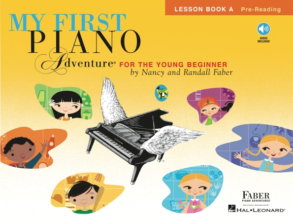
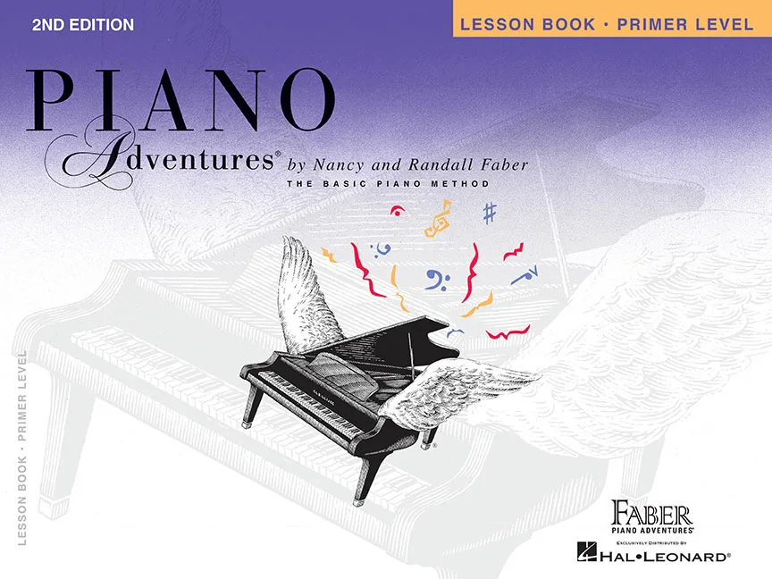
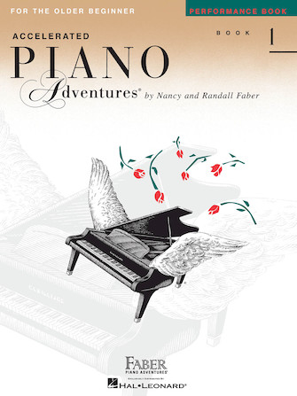
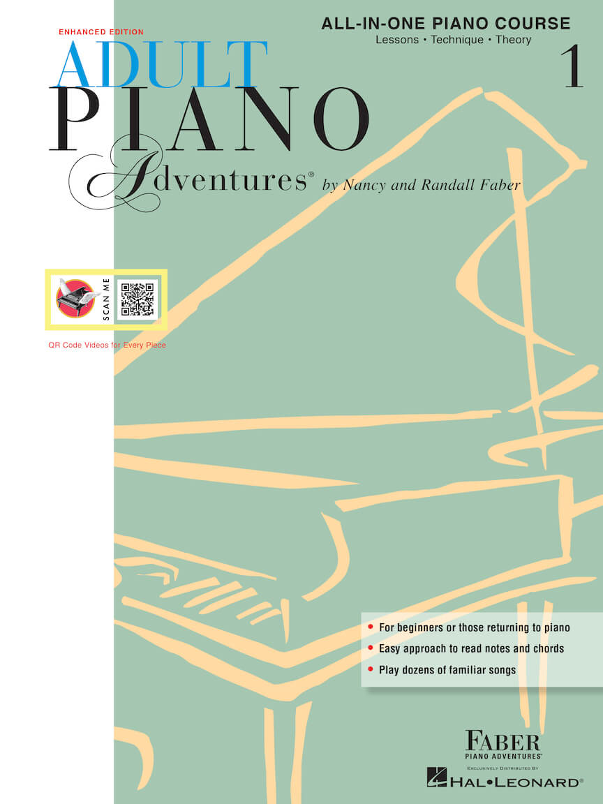

Our Recommended Books
Every student's journey is unique. We select the best methods for each age group.

Early Explorers
Ages 5 - 6
Focusing on rhythm games, finger numbers, and big-note reading to spark early interest.

Young Pianists
Ages 7 - 11
A comprehensive approach covering technique, theory, and performance pieces.

Teen Intensive
Ages 12 - 17
Accelerated learning focusing on classical repertoire and intermediate theory.

Adult & Leisure
Ages 18 & Above
Flexible curriculum for busy adults, emphasizing chord theory and favorite classics.
Project References
- Images: Unsplash, Pexels, and Personal Collection
- Fonts: Playfair Display & Lato via Google Fonts
- Map: Google Maps Embed API
- Content: UP College of Music curriculum guidelines